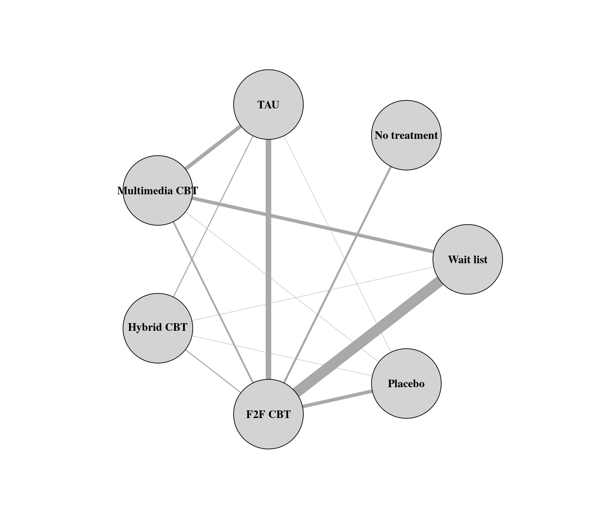

dat.lopez2019.RdResults from 76 studies examining the effectiveness of cognitive behavioral therapy (CBT) for depression in adults.
dat.lopez2019
The data frame contains the following columns:
| study | character | (first) author and year of study |
| treatment | character | treatment provided (see ‘Details’) |
| scale | character | scale used to measure depression symptoms |
| n | numeric | group size |
| diff | numeric | standardized mean change |
| se | numeric | corresponding standard error |
| group | numeric | type of therapy (0 = individual, 1 = group therapy) |
| tailored | numeric | whether the intervention was tailored to each patient (0 = no, 1 = yes) |
| sessions | numeric | number of sessions |
| length | numeric | average session length (in minutes) |
| intensity | numeric | product of sessions and length |
| multi | numeric | intervention included multimedia elements (0 = no, 1 = yes) |
| cog | numeric | intervention included cognitive techniques (0 = no, 1 = yes) |
| ba | numeric | intervention included behavioral activation (0 = no, 1 = yes) |
| psed | numeric | intervention included psychoeducation (0 = no, 1 = yes) |
| home | numeric | intervention included homework (0 = no, 1 = yes) |
| prob | numeric | intervention included problem solving (0 = no, 1 = yes) |
| soc | numeric | intervention included social skills training (0 = no, 1 = yes) |
| relax | numeric | intervention included relaxation (0 = no, 1 = yes) |
| goal | numeric | intervention included goal setting (0 = no, 1 = yes) |
| final | numeric | intervention included a final session (0 = no, 1 = yes) |
| mind | numeric | intervention included mindfulness (0 = no, 1 = yes) |
| act | numeric | intervention included acceptance and commitment therapy (0 = no, 1 = yes) |
The dataset includes the results from 76 studies examining the effectiveness of cognitive behavioral therapy (CBT) for treating depression in adults. Studies included two or more of the following treatments/conditions:
treatment as usual (TAU),
no treatment,
wait list,
psychological or attention placebo,
face-to-face CBT,
multimedia CBT,
hybrid CBT (i.e., multimedia CBT with one or more face-to-face sessions).
Multimedia CBT was defined as CBT delivered via self-help books, audio/video recordings, telephone, computer programs, apps, e-mail, or text messages.
Variable diff is the standardized mean change within each group, with negative values indicating a decrease in depression symptoms.
Personal communication.
López-López, J. A., Davies, S. R., Caldwell, D. M., Churchill, R., Peters, T. J., Tallon, D., Dawson, S., Wu, Q., Li, J., Taylor, A., Lewis, G., Kessler, D. S., Wiles, N., & Welton, N. J. (2019). The process and delivery of CBT for depression in adults: A systematic review and network meta-analysis. Psychological Medicine, 49(12), 1937--1947. https://doi.org/10.1017/S003329171900120X
### copy data into 'dat' and examine data dat <- dat.lopez2019 dat[1:10,1:6]#> study treatment scale n diff se #> 1 Andersson (2005) Placebo BDI 49 -0.2140 0.0208 #> 2 Andersson (2005) Multimedia CBT BDI 36 -1.5529 0.0425 #> 3 Arean (1993) Wait list BDI 20 -0.4032 0.0531 #> 4 Arean (1993) F2F CBT BDI 19 -1.5505 0.0831 #> 5 Beckenridge (1985) Wait list BDI 19 0.2131 0.0542 #> 6 Beckenridge (1985) F2F CBT BDI 17 -1.5438 0.0934 #> 7 Berger (2011) Wait list BDI 22 -0.1787 0.0465 #> 8 Berger (2011) Multimedia CBT BDI 22 -0.8963 0.0557 #> 9 Berger (2011) Multimedia CBT BDI 25 -1.5130 0.0613 #> 10 Besyner (1979) Wait list BDI 11 -0.2115 0.0952### create network graph ('igraph' package must be installed) # \dontrun{ require(igraph) pairs <- data.frame(do.call(rbind, sapply(split(dat$treatment, dat$study), function(x) t(combn(x,2)))), stringsAsFactors=FALSE) pairs$X1 <- factor(pairs$X1, levels=sort(unique(dat$treatment))) pairs$X2 <- factor(pairs$X2, levels=sort(unique(dat$treatment))) tab <- table(pairs[,1], pairs[,2]) tab # adjacency matrix#> #> F2F CBT Hybrid CBT Multimedia CBT No treatment Placebo TAU #> F2F CBT 17 3 5 0 0 0 #> Hybrid CBT 0 0 0 0 0 0 #> Multimedia CBT 0 0 5 0 0 0 #> No treatment 6 0 0 0 0 0 #> Placebo 10 1 1 0 0 0 #> TAU 16 3 11 0 1 0 #> Wait list 31 1 10 0 0 0 #> #> Wait list #> F2F CBT 0 #> Hybrid CBT 0 #> Multimedia CBT 0 #> No treatment 0 #> Placebo 0 #> TAU 0 #> Wait list 0g <- graph_from_adjacency_matrix(tab, mode = "plus", weighted=TRUE, diag=FALSE) plot(g, edge.curved=FALSE, edge.width=E(g)$weight/2, layout=layout_in_circle(g, order=c("Wait list", "No treatment", "TAU", "Multimedia CBT", "Hybrid CBT", "F2F CBT", "Placebo")), vertex.size=45, vertex.color="lightgray", vertex.label.color="black", vertex.label.font=2)# }### restructure data into wide format dat <- to.wide(dat, study="study", grp="treatment", ref="TAU", grpvars=c("diff","se","n"), postfix=c("1","2")) ### compute contrasts between treatment pairs and corresponding sampling variances dat$yi <- with(dat, diff1 - diff2) dat$vi <- with(dat, se1^2 + se2^2) ### calculate the variance-covariance matrix for multitreatment studies calc.v <- function(x) { v <- matrix(x$se2[1]^2, nrow=nrow(x), ncol=nrow(x)) diag(v) <- x$vi v } V <- bldiag(lapply(split(dat, dat$study), calc.v)) ### add contrast matrix to the dataset dat <- contrmat(dat, grp1="treatment1", grp2="treatment2") ### network meta-analysis using a contrast-based random-effects model ### by setting rho=1/2, tau^2 reflects the amount of heterogeneity for all treatment comparisons ### the treatment left out (TAU) becomes the reference level for the treatment comparisons res <- rma.mv(yi, V, data=dat, mods = ~ No.treatment + Wait.list + Placebo + F2F.CBT + Hybrid.CBT + Multimedia.CBT - 1, random = ~ comp | study, rho=1/2) res#> #> Multivariate Meta-Analysis Model (k = 96; method: REML) #> #> Variance Components: #> #> outer factor: study (nlvls = 76) #> inner factor: comp (nlvls = 14) #> #> estim sqrt fixed #> tau^2 1.6262 1.2752 no #> rho 0.5000 yes #> #> Test for Residual Heterogeneity: #> QE(df = 90) = 18276.4524, p-val < .0001 #> #> Test of Moderators (coefficients 1:6): #> QM(df = 6) = 74.8404, p-val < .0001 #> #> Model Results: #> #> estimate se zval pval ci.lb ci.ub #> No.treatment 0.1975 0.5905 0.3344 0.7381 -0.9599 1.3548 #> Wait.list 0.7030 0.3471 2.0253 0.0428 0.0227 1.3834 * #> Placebo -0.3699 0.4623 -0.8002 0.4236 -1.2760 0.5362 #> F2F.CBT -1.1177 0.2730 -4.0943 <.0001 -1.6527 -0.5826 *** #> Hybrid.CBT -1.0781 0.5190 -2.0775 0.0378 -2.0953 -0.0610 * #> Multimedia.CBT -0.6017 0.3399 -1.7700 0.0767 -1.2679 0.0646 . #> #> --- #> Signif. codes: 0 ‘***’ 0.001 ‘**’ 0.01 ‘*’ 0.05 ‘.’ 0.1 ‘ ’ 1 #>### forest plot of the contrast estimates (treatments versus TAU) forest(coef(res), diag(vcov(res)), slab=sub(".", " ", names(coef(res)), fixed=TRUE), xlim=c(-5,5), alim=c(-3,3), psize=1, header="Treatment", xlab="Difference in Standardized Mean Change (compared to TAU)")### fit random inconsistency effects model res <- rma.mv(yi, V, data=dat, mods = ~ No.treatment + Wait.list + Placebo + F2F.CBT + Hybrid.CBT + Multimedia.CBT - 1, random = list(~ comp | study, ~ comp | design), rho=1/2, phi=1/2) res#> #> Multivariate Meta-Analysis Model (k = 96; method: REML) #> #> Variance Components: #> #> outer factor: study (nlvls = 76) #> inner factor: comp (nlvls = 14) #> #> estim sqrt fixed #> tau^2 1.6262 1.2752 no #> rho 0.5000 yes #> #> outer factor: design (nlvls = 20) #> inner factor: comp (nlvls = 14) #> #> estim sqrt fixed #> gamma^2 0.0000 0.0001 no #> phi 0.5000 yes #> #> Test for Residual Heterogeneity: #> QE(df = 90) = 18276.4524, p-val < .0001 #> #> Test of Moderators (coefficients 1:6): #> QM(df = 6) = 74.8404, p-val < .0001 #> #> Model Results: #> #> estimate se zval pval ci.lb ci.ub #> No.treatment 0.1975 0.5905 0.3344 0.7381 -0.9599 1.3548 #> Wait.list 0.7030 0.3471 2.0253 0.0428 0.0227 1.3834 * #> Placebo -0.3699 0.4623 -0.8002 0.4236 -1.2760 0.5362 #> F2F.CBT -1.1177 0.2730 -4.0943 <.0001 -1.6527 -0.5826 *** #> Hybrid.CBT -1.0781 0.5190 -2.0775 0.0378 -2.0953 -0.0610 * #> Multimedia.CBT -0.6017 0.3399 -1.7700 0.0767 -1.2679 0.0646 . #> #> --- #> Signif. codes: 0 ‘***’ 0.001 ‘**’ 0.01 ‘*’ 0.05 ‘.’ 0.1 ‘ ’ 1 #>